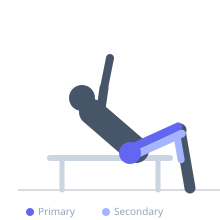
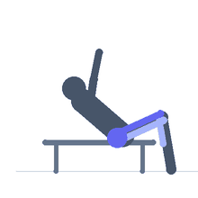

Exercise guide / Treadmill Incline Power Walk
Treadmill Incline Power Walk
Treadmill incline power walking places the treadmill at an elevated grade — typically 10–15% — and maintains a brisk walking pace to maximise cardiovascular demand without the joint impact of running. The steep angle shifts the primary load from the calves and hip flexors toward the gluteus maximus, hamstrings, and soleus while simultaneously elevating heart rate into aerobic training zones. It is a low-impact, sustainable conditioning tool well suited to active recovery sessions, fat-loss protocols, and individuals managing joint pain.
Primary muscles
gluteus maximus
rectus femoris
Secondary muscles
biceps femoris long head
soleus
gastrocnemius medial
Stabilizers
erector spinae
transverse abdominis
Equipment


Starting position
- Stand on the treadmill belt with feet hip-width apart. Set the incline to 10–15% and the speed to a brisk walking pace (3–4 mph / 5–6.5 km/h). Hold the handles lightly only for balance, not to support body weight.
Setup
- Set the treadmill incline first, then gradually increase speed. Do not grip the handles tightly as this reduces caloric expenditure and alters posture.
Steps
- Step 1: Set incline to 10–15% and speed to 3–4 mph. Step onto the moving belt carefully.
- Step 2: Walk with a tall, upright posture — chest open, shoulders back, gaze forward. Avoid leaning forward excessively.
- Step 3: Drive each stride from the glutes, pushing through the heel as the foot strikes the belt.
- Step 4: Swing the arms naturally at your sides in opposition to the leg movement.
- Step 5: Maintain the pace for the target duration, typically 20–45 minutes.
Coaching cues
- Walk tall — imagine a string pulling the top of your head toward the ceiling
- Drive from the glute, not the hip flexor
- Let go of the handles
Breathing
- Breathe naturally and rhythmically through the nose and mouth. Aim to maintain a pace at which you can still hold a conversation (Zone 2 aerobic).
Range of motion
- Full hip extension on each stride is the goal. Focus on pushing through the rear leg rather than pulling with the front leg.
Tempo
- Sustained steady-state: 20–45 minutes at 3–4 mph, 10–15% incline. Interval option: 2 minutes at 15%, 1 minute at 5%, repeated 8–12 times.
Common mistakes
- Gripping the handrails, which unloads the lower body and reduces caloric output by up to 30%
- Leaning excessively forward into the incline, reducing glute activation
- Using too high a speed that forces a jogging gait rather than a walking stride
Safety
- Step off carefully by straddling the belt if you need to stop suddenly — do not jump off a moving belt
- Reduce incline gradually before stopping to avoid lightheadedness from abrupt postural change
Training
- endurance: 1–1 reps
- endurance: 1–1 sets
- Rest: {'endurance': 0}